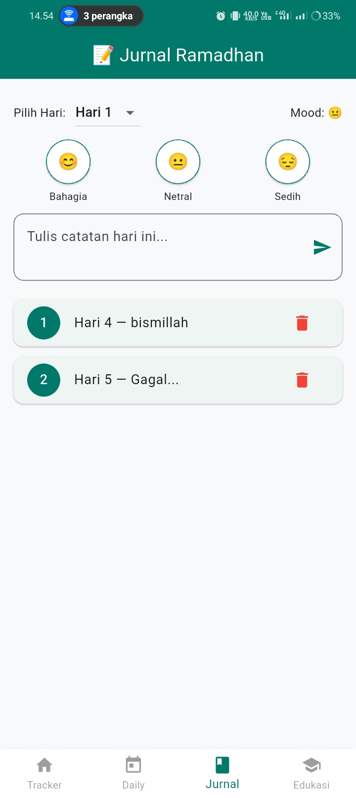
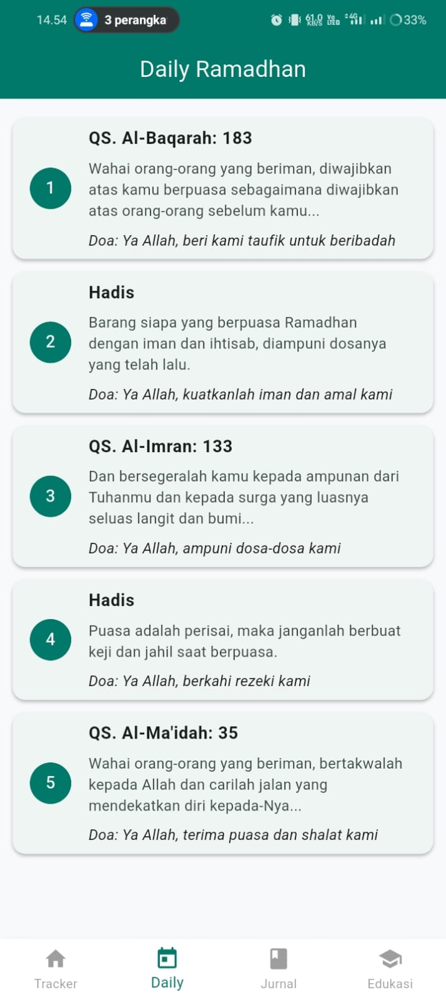
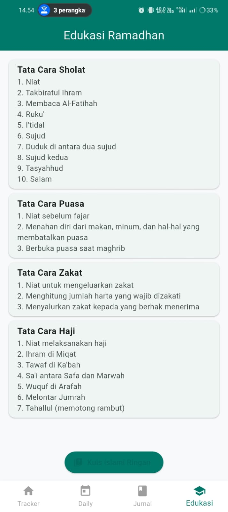

📸 Screenshot Aplikasi Ramadhan Tracker
⬇️ Tempatkan foto asli aplikasi kamu di area di bawah ini

📊 Dashboard & Progress Ibadah

📓Masukkan foto jurnal harianFile ramadhan_jurnal.jpeg harus tersedia di direktori yang sama
📝 Jurnal & Refleksi Harian

🎯Masukkan foto target ibadahSimpan file dengan nama ramadhan_target.jpeg
🎯 Refleksi dan dalil

⏰Masukkan foto pengingatSimpan file dengan nama ramadhan_pengingat.jpeg
🕌 Edukasi & tatacara